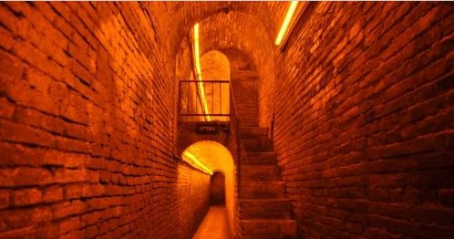
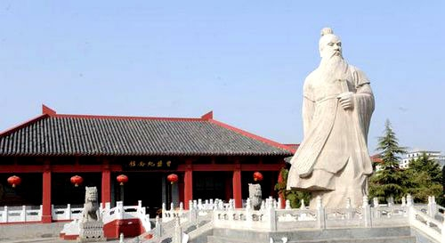
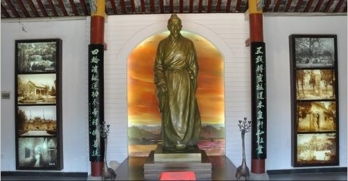
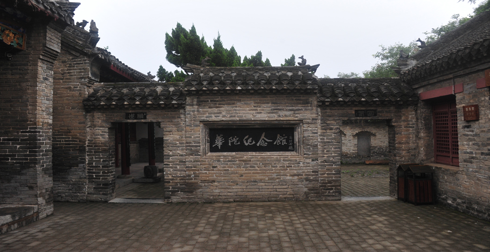
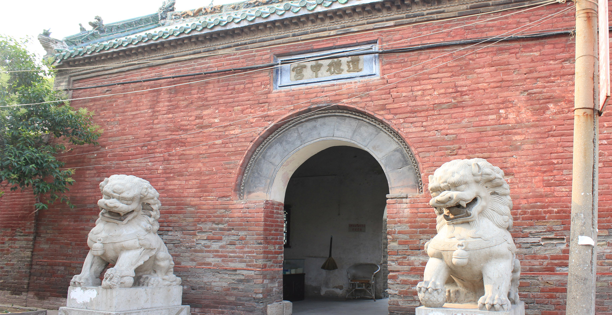
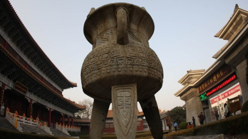
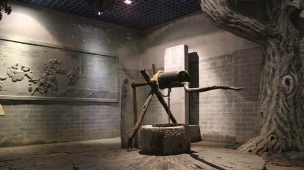

景点名片
花戏楼
等级：国家AAAA级旅游景区、国家级重点文物保护单位
位于亳州市花戏楼路，涡水南岸，原名大关帝庙，又称山陕会馆，是一座建于清康熙年间的专供演戏的建筑。
戏楼座南面北，舞台前伸，形如“凸”状，四方翼角，加之屋面琉璃铺饰，金碧辉煌。舞台用六根立柱顶立，檐角之下立方柱六根，柱础雕有故事图案。舞台正中屏风透雕二龙戏珠，上悬匾额曰“清歌妙舞”，中间上下场门有二额“想当然”、“莫须有”。台前悬挂木对联曰“一曲阳春唤醒今古梦，两般面貌做尽忠奸情”。舞台两旁小台有二侧门，额上题“阳春”、“白雪”。舞台上方悬有藻井四围悬枋和徒垂莲。柱间有大枋，大枋与悬枋之间，悬有棚券，柱头悬狮垂鱼。枋之面外皆镶大木透雕，共有三国戏十八出。八出戏的人物，车马风物景色，雕刻工艺立形完善，给人以真实感，其它还有花卉、奇禽异兽。均雕刻玲珑剔透。其余藻井，梁枋之间布满彩绘，有戏文、人物、花鸟、山水等，还有各种图案。由此可见花戏楼的建筑秀丽玲珑，雕绘精湛，别具一格，为清朝盛世的代表作，对研究我国戏剧的发展、雕绘艺术的精华都具有很重要的价值。
曹操运兵道
等级：国家级重点文物保护单位
又称曹操藏兵道，位于亳州市老城内主要街道下，以大隅首为中心，向东、西、南、北四面延伸，直至郊外。曹操运兵道是中国现存最古老、保存最完整的地下大型军事设施，也是古代汉族劳动人民智慧的结晶和古代地道战术的总汇。整个地道经纬交织，纵横交错；布局奥妙，变化多样；立体分布，结构复杂；规模宏伟，工程浩大。目前已发现八千余米，是迄今发现历史最早、规模最大的地下军事战道。
运兵道始建于东汉末年，是魏武帝曹操为其军事需要，专门修筑的地下军事战道，因最初用于运送士兵，故称“曹操运兵道”。唐宋时期多次修葺，仍作为军事战道使用。南宋嘉熙四年（1240年），黄河决口，亳州城被淹，运兵道被灌淤塞，自此深埋地下700余年未被发现。
据史书载：曹操多次运用地道战术取得战争胜利，亳州古地下道，就是曹操当年在家乡修筑的地下军事防御战道。他把数量不多的士兵从地道内暗暗送出城外，再从城外开进城内，反复多次，迷惑敌人，出奇制胜。 现存古地道，有土木结构，砖土结构，砖结构三种类型，有单行道、转弯道、平行双道、上下两层道四种形式。地道距地面深度一般2至4米，最深7米，道内高度1.8米左右，道宽0.7米，道内转弯处均为“T”型，平行双道这两道相距2至3.5米，中间砌有方形传话孔。古地道内幽深蜿蜒，曲折不定，设有猫耳洞、掩体、障碍券、障碍墙、绊腿板、陷阱等军事设施，还有通气孔、传话孔、灯笼等附属设施。
地道内出土有弹丸、铁刀、铁灯、卸枚、围棋子、铜镜、陶器、瓷器、砚台等汉、唐、宋各代的文物，它对研究中国古代军事建筑、军事战术以及曹操军事思想有重要意义。这是我国现存最古老、保存最完整的地下大型军事设施，也是古代汉族劳动人民智慧的结晶和古代地道战术的总汇，“它远远超过了地面上保留的一座完整古老城池的价值”，被誉为“地下长城”是当之无愧的。
曹操公园
等级：国家级重点文物保护单位
过去称曹氏公园，位于安徽省亳州市2010年改名为曹操公园，因园内有曹操家族墓群而得名。公园占地300亩，建筑为仿汉建筑，气势恢宏。公园共分为纪念区、陵墓区、静休区、游乐区四部分。纪念区以曹操纪念馆为主体，面积2200平方米，内置曹操蜡象及展品，反映曹操政治、军事、文学方面的千秋功业。陵墓区是曹操家族墓群，建有碑林、碑廊、甬道等，游人来此凭吊，尽抒怀古幽思。
"四冢"为曹氏公园内南北弧形分布的四座土丘，高者约8米，低者约5米，面积共约2500平方米，系曹氏家族墓葬，民间称"曹四孤堆"或"曹氏孤堆"。墓群周围遍植松柏，夜深人静，风动枝叶，飒飒作响，犹如大海波涛，故有"四冢松涛"之说。
曹操公园位于安徽省亳州市魏武大道两侧，狭义上的曹操公园指的位置是南门是芍花路，北门是香港步行街和由我国著名的书画家魏苦庵女士创办的竹兰轩书画社，东门是亳州市的主干道之一魏武大道。曹操公园主要包括董园汉墓群、曹四孤堆、刘园孤堆、薛家孤堆、观音山孤堆、张园汉墓、马园汉墓、袁牌坊汉墓群、元宝坑汉墓群等。占地约10平方公里，甚为庞大。2001年6月5日，被国务院公布为全国重点文物保护单位。
华祖庵
等级：国家AAA级旅游景区、安徽省重点文物保护单位
是为祭祀我国中东汉时期杰出的医药学家华佗的庙祠。华佗字元化，一名敷。安徽亳州人，他精研歧黄，并通数经。一生不慕利禄，走街串巷、寻求方药，为人闻疾、济世活人。在1600多年前就创用酒服“麻沸散”施行剖腹手术，为外科鼻祖。又创编“五禽戏”以防生保健，开我国体育医疗的先河，医术精湛、医德高尚，后人颂为神医。
华祖庵建于何时已不可考。清代乾隆辛巳年（公元1761年）修缮，嘉庆二年（公元1797年）复修，同治年间又重修一次。1962年，亳县人民政府拨款进行维修，增设华佗纪念馆，郭沫若题馆名。1980年又拨款维修。祖庙门前，有石狮一对，一雌一雄，足踏莲花。进门便见正殿，殿门两侧廊柱上刻楹联一付：“素论无传一卷伤心狱吏火户枢不朽片言终在活人方”。正殿内塑华佗立像，像高2．7米。殿内陈列《华佗神方》、《华佗遗著》、《中藏经》、《华佗乡土别传》等著作。左右两面壁上六组雕塑生辉，反映出了华佗的生平事迹。正殿东侧有两偏门，南门曰“回春”，北门曰“济世”，均为砖雕。两偏门正中照壁上镶郭沫若手书“华佗纪念馆”刻石。由偏门入内，可见“自怡亭”，四角凉亭，传为华佗休息之所。亭柱对联云：“自是闲云野鹤，怡然流水瑶琴”。亭对面室内陈列“全国华佗学术讨论会”部分论文及资料汇编。室正中壁上挂大幅油画，有“术比长桑，功牟良相”，楚图南书林则徐句：“苟利国家生死以，岂因福祸趋避之”等联语，室外廊柱上楹为：“善德善言善行总以善医为善，名山名水名胜更因名人而名”等，赞颂华佗的善医善行。
现存华佗纪念馆与华佗故居连为一体，占地1.3万平方米，有山门、耳房、大殿、东西殿、禅房、元化草堂、存珍斋、益寿轩、课徒馆、自怡亭、五禽戏台、药圃、洗芝池、碑廊等建筑。大殿上方悬有清嘉庆2年（1797）安徽巡抚朱圭题写的“燮理通微”的匾额。殿内金柱上有朱圭题写的楹联：“五戏转灵枢道本皇轩仙位业，四轮消劫运功参地释佛菩提”。店内供奉着雕塑大师钱绍武为华佗雕塑的铜像。碑廊上襄着古今名人为华佗题写的诗文。整个纪念馆，古朴典雅，环境优美，凝聚了中医药文化的精髓。
道德中宫
等级：安徽省重点文物保护单位
又名老祖殿，在今亳州市老子殿街，始建于唐，重建于明万历年间。为纪念老子的宫观。传说老子曾在此讲学授道。内有老子道德经石刻，并陈列有关老子的文献资料。
宫前有问礼巷，传说是当年孔子向老子问礼之地。宋时，涡河之滨有三个老子庙：河南省鹿邑县的上清官、亳州城内的道德中宫、涡阳城北的下清宫。老子名聃，一说姓李，名耳，字伯阳，聃是谥号，春秋末年思想家，道家创始者，曾任周守藏室之吏。相传，唐太宗、唐唐宗、宋真宗均曾巡莅亳州，拜谒老子庙。唐高宗封老子为太上玄元皇帝号，宋真宗则加封为太上老君混元上德皇帝号。欧阳修知亳州时有诗：“颖亳相望乐未央，吾州乃得诒仙乡”。 现有山门3间，上题“道德中宫”四字，中殿礼人祖，后殿奉老子，有高3.1米的老子像。东院有殿3间，敬鲁班，门题“紫气东来”，西院有殿3间，敬财神，门题“青牛西渡”。道德中宫现已列为省重点文物保护单位。
古井酒文化博览园
等级：国家AAAA级旅游景区、安徽省重点文物保护单位
坐落在曹操与华佗故里、药材之乡的安徽省亳州市，属于安徽古井集团有限责任公司，被誉为“华夏第一白酒博物馆”。
古井酒文化博览园包括北区和南区两大部分，北区游览点有古井园、灌装自动化车间、酿酒生产车间，南区游览点有古井酒文化博物馆和古井宾馆。以博大精深、独具特色的古井酒文化为主线，全面展示了古井酒文化对中国酒文化的继承和发展，馆藏有丰富、珍贵的古代酒器、酒具。
古井酒文化博物馆是博览园的主要组成部分，占地面积3200平方米，建筑面积2200平方米。整体布局巧妙，全部仿古建筑，汉式阙门雄伟壮观，清式回廊布满了碑文与浮雕。大殿是该博物馆的主要建筑和陈列展览区域，建筑样式是仿明清琉璃瓦双重檐殿宇式建筑。以现代装饰和陈列为特色的主展厅共有两层，面积为1152平方米。一楼展厅主要内容是中国酒文化与古井酒文化的有机结合展示，二楼展厅主要有“古井发展史”、“名酒荟萃”和“古井画廊”等展区。
博览园内还有省级重点文物保护单位“宋代地下古井”和“窖池”。宋代古井位于地下六米深处。参观窖池时，还可以参观手工酿酒的过程。
古井酒文化博物馆是安徽省十大行业馆之首，也是亳州市首屈一指的博物馆，相继被评为“全国精神文明建设先进单位”、国家首批“全国工业旅游示范点”和“全市爱国主义教育基地”等。2008年，成为国家AAAA级旅游景区。经成为亳州市、安徽省乃至全国旅游文化中的一个重要组成部分和独具文化特色的一个亮丽景点。